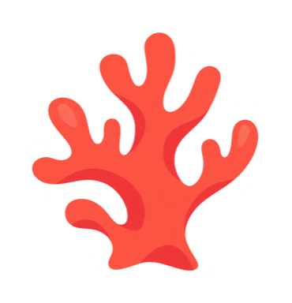

CORA · Maré Techonline
Oi! Vim pelo e-mail. A vaga é remota mesmo?
É sim, com um encontro por mês em Recife. Hoje você prefere liderar tecnicamente ou também gerir pessoas?
Liderar tecnicamente. Consigo começar em 30 dias.
Perfeito. Escolha um horário com a Nara, que conduz a entrevista: agenda.nara.exemplo/014-larissa
Marquei quinta às 14h!
Entrevista marcada com a Nara · qui, 14h
Nara simulada
Mensagem